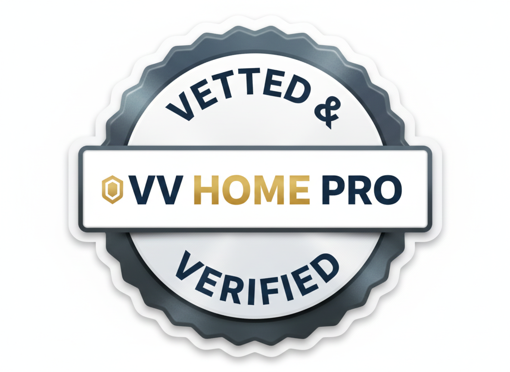

Why Choose a VV-Verified Pro?
When you hire a contractor through VV HOME PRO, you aren't just finding a name in a directory—you are choosing a partner who has been strictly vetted to meet the highest standards of industry excellence.
We do the heavy lifting so you can have peace of mind:
⚡ AI-Pre-Scoped Accuracy
Our proprietary AI engine analyzes project intent, ensuring you are matched with pros who specialize in your specific needs, not just someone buying clicks.
🛡️ Verified Safety & Licensing
We directly verify that every partner holds active trade licenses and proper insurance coverage.
🤝 Trust & Transparency
Our pros pledge to follow strict operating standards, including clear pricing, contract integrity, and data privacy.
🏅 The Vetted & Verified Badge
Only partners who pass our rigorous screening process are authorized to display this badge, ensuring they maintain a positive track record in your community.
Looking for a trusted partner? Click below to review our standards for contractors, or contact us to find a verified pro in your area.
View Our Contractor Standards